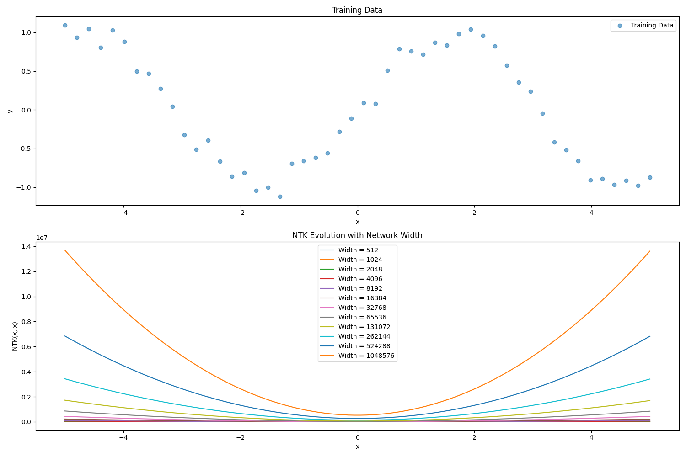

Neural Tangent Kernels
Apr 11, 2025
A rough derivation of the neural tangent kernel
What Are They and Why Do We Care?
It's long been known that overparameterized neural networks are easily able to achieve near-zero training loss, while still maintaining decent generalization performance. Even though models are initialized randomly, different initializations often converge to similarly good performance, especially when models are overparameterized (i.e. far more parameters than training data points).
Neural Tangent Kernels provide a method to explain the evolution of deep neural networks during training. By studying the NTK of a given architecture, we can understand why wide enough networks consistently converge to global minima.
Some Preliminaries
Kernels
A kernel acts as a similarity measure between data points. Formally, we can define a kernel , and intuitively, tells us how much the prediction of one data point (say ) depends on another (). Generally, we can define some function , and then the kernel is simply an inner product of the two data points after transformation so that . Kernels provide a simple way to make predictions: interpreting the kernel as a measure of the similarity between two inputs, we can define a prediction for an unseen input as:
for training data . It's worth noting that a kernel function is always symmetric, and its matrix representation is always SPSD.
Jacobians
For some function , we define its derivative w.r.t. an input vector via the Jacobian matrix :
The derivative is then defined \nabla_\vec{x} f = J^\top.
Gaussian Processes
Gaussian processes are super interesting and probably deserve a post of their own, but here we just define the basics. Given a collection of data points , GPs fundamentally assume that they follow a jointly Gaussian distribution, defined by a mean vector and covariance matrix , where the covariance matrix is defined entrywise as , where is some kernel of our choosing. Then, making predictions with a GP is the same thing as sampling from this distribution, conditioned on our known points.
Setup
Consider a fully connected network of width , with neurons in each layer, where . Layer and layer are our read-in (input) and read-out (output) layers respectively. We define the action of the network as a function , where the subscript indicates the parameters of our model. Our training dataset contains input-output pairs: , and we denote all training inputs , and all training outputs .
Let's also define the forward pass of our network:
where denotes pre-activations, and denotes post-activations. We apply a scaling so that infinite width networks (where most of our analysis will take place) don't diverge. We initialize all paramters i.i.d. Gaussian .
As always, our objective is to minimize some total loss function defined via a per-sample loss :
Via chain rule, we have
If we now take our step size as infinitesimally small, we can consider it a time derivative of , so that
and using chain rule again,
Now, we see the Neural Tangent Kernel appear: . Employing the intuition of taking an inner product of some transformation of the inputs, we can define , and then our inner product is the standard dot product.
Infinite Width Networks
NTKs as Gaussian Processes
The output functions () are i.i.d. centered Gaussian processes with covariance . We define this Gaussian process recursively:
The proof of this statement is by induction, and is omitted here, but is covered in Lee & Bahri et al. (linked in references). We refer to this as the Neural Network Gaussian Process (NNGP).
Why is this useful? NNGPs let us do Bayesian inference using neural networks without every having to train them! We use the kernel to do GP regression, which allows us to analyze and predict generalization in the lazy learning regime.
Deterministic NTK
The main contribution of Jacot's original NTK paper is that as the network approaches the infinite width limit, the NTK does two very important things:
- it is deterministic at initialization (i.e. the initialization paramters don't affect the kernel, the kernel is solely determined by the architecture)
- it stays constant during training
This is a pretty surprising result -- it tells us that in the infinite width limit, the network's behavior is entirely determined by its architecture, not the initialization parameters. In fact, this is observed in practice: we often see large enough networks converge to similar solutions.
Convergence Analysis
Since the NTK is deterministic and constant during training, we can analyze the convergence of the network. Let's consider the case of a linear network, where the output is a linear function of the input. We'll examine gradient flow (continuous-time gradient descent) with learning rate :
For a network with parameters , the evolution of the network's output on any input follows:
a linear ODE in function space for which the solution can be written as
where are time-dependent coefficients that depend on the loss function. Effectively, this equation tells us that the network's output evolves in some subspace spanned by the kernel functions .
Practical Implications
Several useful implications follow from the NTK being deterministic and constant during training. For example, we can use the NTK to compare different architectures before training, or to understand generalization in the lazy learning regime (my research in BAIR).
- Architecture Design: A "good" architecture should have a well-conditioned NTK that allows for efficient learning. (A well-conditioned NTK is one where the singular values are reasonably close to one another, and allows iterative algorithms (like gradient descent) to converge quickly.)
- Generalization: If the NTK is well-behaved, the network will generalize well even without explicit regularization.
- Training Dynamics: The constant NTK assumption helps explain why wide networks often train stably and predictably, unlike their narrower counterparts and lends some theoretical justification for the empirical observation that making neural networks bigger makes them easier to train.
Computing the NTK
For a network with parameters , the NTK between two inputs and is:
This is approximated by sampling multiple initializations and averaging the Jacobian products. I'm not super familar with this, but I know that Google's neural-tangents library has some tools for computing NTKs.
Visualizing the NTK

You can download the code used to generate this figure here.